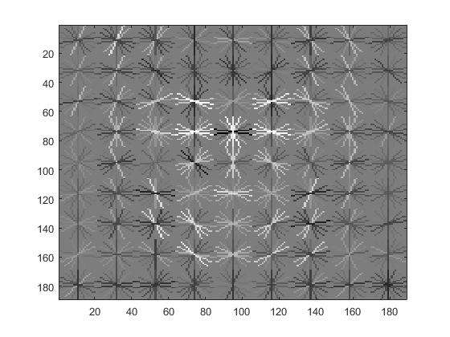
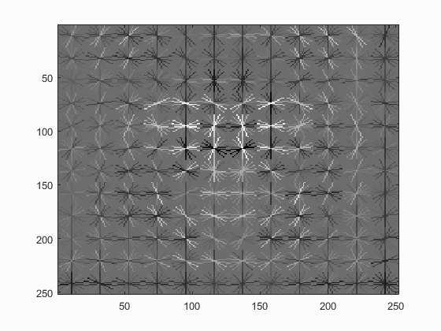
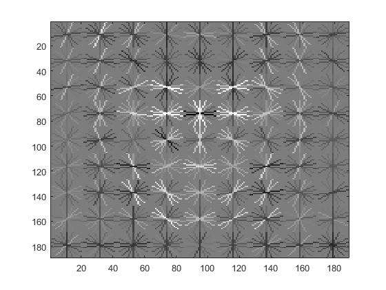
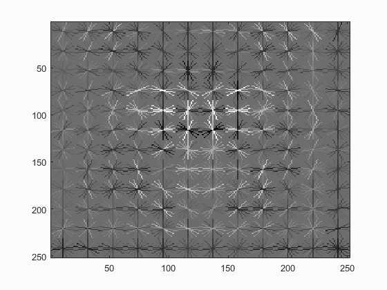
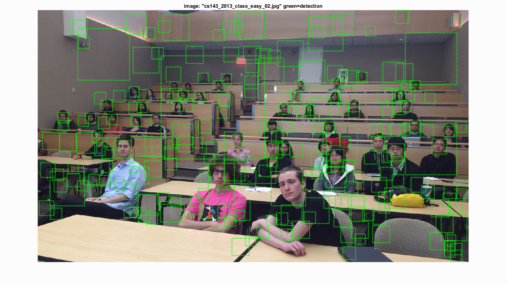

Project 5 / Face Detection with a Sliding Window
In this project, I implement face detection on a series of test images. I do this by first training a linear classifier on a series of positive and negative Histogram of Gradients features that I sample from positive and negative training images. I use this classifier to classify millions of sliding windows on multiple scales on the test images to determine the locations of faces in these images.
Example heading
First I create two matrices of positive and negative features respectively, to use in training a classifier for distinguishing between faces and non-faces. I create the matrix of positive features (faces) by loading the positive training images and converting them into HoG features using vl_hog. To create the matrix of negative features, I load the negative training images and randomly select an image from the set, and a random window from that image and create a HoG feature from it. By doing this I can create many more negative features than there are images in the negative training set. Next I train my linear classifier using these sets using vl_svmtrain with a lambda of .0001. This classifier has an accuracy of nearly 1 on the training set. In the image below, you can see how the classifier divides the positive features from the negative features.
The image below on the top is a face template HoG visualization that is completely random. Once the classifier is trained, the face template starts to more clearly resemble a face as seen in the bottom two images. The bottom left image is the face template created by training a classifier with a cell_size of 6, while the bottom right image shows the template created by training the classifier with a cell_size of 3. As you can see, the face template created using a smaller HoG cell size is a much more detailed representation of a face, but requires more computation time to create.

  
 
The images below show the average precision for each cell_size used in creating the HoG face template and the step size used in classifying the test data. As you can see, the smaller HoG size and step leads to better results as it performs a much more fine search of the image. The top image corresponds to a cell_size of 6, the bottom left a cell_size of 4, and the bottom right a cell_size of 3.


Below I show the results of face detection using a step_size of 3. As you can see, almost all of the faces are identified, but there are a large number of false positives. Below the image you can see the relationship between the number of false positives and recall. The higher the recall, the greater the number of false positives. To achieve 90% recall, there will be a large number of false positives.
